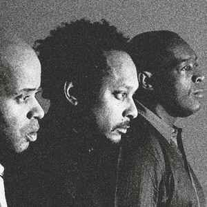

Detroit era famosa por sus fabricas de coches, una ciudad futurista y prospera de Estados Unidos, en los años 70
empezó su decadencia. Las principales fabricas fueron cerrando y como consecuencia sufrió despoblación y falta
de trabajo. La juventud más rebelde buscaba una vía de escape a este aire desolador y lo encontró en los clubs y
afters de la ciudad que tenían una gran oferta para salir a bailar géneros de música moderna. Se podía escucha
house Chigago, disco, soul, funk, etc.
El origen del techno se encuentra en la fusión de ciertas corrientes de música europea, basadas en
el uso experimental del sintetizador, o el primer electro. A esto se añade la influencia de una estética y
temática de corte futurista, basada tanto en la ciencia ficción como en algunas ideas de la obra de Alvin
Toffler. El propio término techno deriva del concepto de "techno rebels" presente en el libro La Tercera Ola del
sociólogo estadounidense. Esta combinación de ideas acerca el techno a un tipo de estética afrofuturista y
cyberpunk. Desde 1977 hasta mediados de los años 1980, se emitió en Detroit un programa nocturno de radio
llamado Midnight Funk Association. Conducido por The Electrifying Mojo, su original enfoque lo hizo popular,
causando un considerable impacto en la forma de acercarse a la música de toda una generación de oyentes. The
Electrifying Mojo tenía que moverse de emisora en emisora debido a una arriesgada programación que le costó
varios despidos, pues su propuesta se salía del canon comercial habitual y del tipo de radio a la que la
comunidad afrodescendiente estaba acostumbrada. En su espacio se podía escuchar una personal selección de
estilos y artistas que podía incluir soul clásico, Kraftwerk, nuevos románticos ingleses, p-funk, The Clash o
música clásica.
Este programa sirvió de inspiración para numerosos productores locales afroamericanos como Juan Atkins, Derrick
May, Kevin Saunderson (conocidos como The Belleville Three por el instituto de Detroit donde
estudiaban) y Eddie Fowlkes.  Influidos por el sonido electrónico
alemán y la tradición musical negra, comenzaron a producir con sintetizadores un tipo de música que compartía
elementos con el electro que artistas como Afrika Bambaataa hacían en aquella época en otros puntos del país.
Juan Atkins fue el pionero de todos ellos, al formar a comienzos de la década de 1980 junto al veterano de
Vietnam Richard Davis el grupo electro Cybotron. Entre sus producciones se cuenta el que es considerado como
primer tema de techno de la historia, "Alleys Of Your Mind" (1981), o canciones que sentarían las bases del
género como "Clear". El grupo se dotó de una estética futurista y relacionada con la ciencia ficción que se
refleja tanto en su música como en la temática de las canciones y en el nombre del propio género. De la obra del
futurólogo Alvin Toffler fueron tomados términos como Cybotron, Metroplex o techno.
El sonido de Detroit estaba profundamente influido por la música afroamericana estadounidense, especialmente por
géneros como el soul y el funk, y en particular por el P-Funk de Parliament. El estilo de su teclista Bernie
Worrell, uno de los primeros músicos de funk que cambió el teclado Hammond por un sintetizador, influyó
notablemente sobre la forma de tocar de los impulsores del techno. La combinación de la tradición negra con la
música que venía de Europa, en particular el krautrock, el italo disco de Giorgio Moroder y la experimentación
generalizada que tenía lugar con sintetizadores, dieron como resultado ese primer sonido techno.
En la actualidad existen multitud de estilos de techno, si bien está generalmente aceptado que la génesis del
género se encuentra en el detroit techno y en sus precursores.
Existen algunas bandas y DJ's que son consideramos los padres de este género, a continuación hablaremos un poco
sobre ellos:
Es una banda alemana de música electrónica, formada por Ralf Hütter y Florian Schneider en 1970 en Düsseldorf, liderada conjuntamente hasta la partida de Schneider en 2009. Kraftwerk (Central Eléctrica) fue uno de los primeros grupos en popularizar la música electrónica y son ampliamente considerados los pioneros del género y en muchas de sus ramas como el dance, house, trance, italo-dance, eurodance, entre otros. En la década de 1970 y principios de los años 1980, el sonido distintivo de Kraftwerk fue revolucionario, y ha tenido un efecto duradero a través de muchos géneros de la música moderna. En enero de 2014 la Academia de los Grammy honró a Kraftwerk con un Lifetime Achievement Award. El característico sonido de Kraftwerk, combina ritmos repetitivos con melodías pegadizas, principalmente siguiendo un estilo clásico occidental de la armonía, con una instrumentación minimalista y estrictamente electrónica. Las letras simplificadas del grupo son a veces cantadas a través de un vocoder o generadas por un sintetizador de habla con la intención de intensificar el tono profético de su sonido. Tras unos primeros álbumes experimentales, Kraftwerk 1 (1970), Kraftwerk 2 (1972) y Ralf und Florian (1973), en 1974 el grupo logró reconocimiento internacional con Autobahn cuya canción homónima de veintidós minutos demostró su confianza en los sintetizadores como instrumentos de creación musical. Después siguieron tres álbumes muy influyentes para la música pop: Radio-Activity (1975), Trans Europa Express (1977) y The Man-Machine (1978).
Se conocieron en el instituto y su interés por la nueva música creció gracias a la influencia del programa de radio Electrifying Mojo: Depeche Mode, New Order, Giorgio Morode, Kraftwerk eran algunos de los grupos que sonaban a diario, se mostraban los sonidos de moda de la época muchos de ellos procedentes de Europa. Canciones que han marcado la vida de millones de personas de todo el planeta. Uno de los buenos ejemplos del género Detroit Techno.
Fue el primero en adquirir un sintetizador y el primero en utilizar el término Techno, que proviene del libro Shock del sociólogo y futurista Alvin Toffler donde describía sobre el acelerado cambio tecnológico en el año 1970. Atkins creo su propio plataforma, el sello discográfico Metroplex, publicando temas que definen perfectamente el género: "No UFO's (1985), Night Drive (Thru-Babylon).
La persona encargada de que el género llegara a las masas. Su tema Inner City con la vocalista Paris Grey es el mayor éxito que ha cosechado. Kevin Saunderson empezó su carrera como Dj y desarrolló nuevas habilidades que le introdujeron como productor musical que creó su propio sello discográfico KMS Records. Ha publicado bajo múltiples pseudónimos, tales como Tronik House, Reese Project, Essaray y E-Dancer.
Sigue siendo reclamado en festivales y clubs de todo el mundo, una persona cercana y divertida. Su tema "Nude Photo" (1987) ayudó a consolidar la escena Techno Detroit. El disco apareció en los estantes de algunas tiendas en Europa como material raro de música electrónica.
Otro de los responsable de la evolución del techno Detroit, aunque menos mencionable en los portales de la historia. Publicó su primer disco en el legendario sello Metroplex de Atkins. Tras un paso breve por la universidad, pronto se concentró de lleno en desarrollar su carrera musical. Desde su inicio ha estado asociado a los productores de detroit techno originales, los llamados "The Belleville Three": Juan Atkins, Derrick May y Kevin Saunderson.
Fue el primer club techno underground del mundo. Era algo diferente el único lugar del planeta para escuchar esta música, durante los primeros años de la evolución del Techno. Se generó el espíritu de unidad de la escena e inspiró a numerosos artistas de la época.